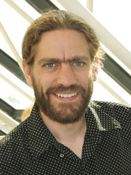

Invited Speakers
François Dupressoir
About the speakerTitle:
Formal and Compositional Proofs of Probing Security for Masked Algorithms
Abstract:
Protecting secret-manipulating programs against adversaries that may observe side-channels is challenging, and often involves complex countermeasures that are difficult to reason about. The evaluation of such countermeasures and of their deployment is therefore often split between proofs of security in relatively simple models that serve as a first filter before implementation, and practical and empirical evaluations against known attacks, which validates that the model does not depart too much from the reality of such attacks. However, proofs of side-channel security, even in the simplest models considered (such as the probing model), are large, tedious and error-prone. In this talk, I will discuss recent advances in the automated and formal verification of probing security. Starting from some observations relating security in the probing model to standard language-based security notions, I will present a strong notion of security that supports both automated verification for small programs at small security orders, and compositional proofs of security for large programs at arbitrary orders.
Aurélien Francillon

About the speakerTitle:
Analyzing thousands of firmware images and a few physical devices. What's next?
Abstract:
There are many types of embedded systems, some are designed with security in mind, and others are not. This talk will make an overview of security problems that have been found with both large scale automated static analysis (within the firmware.re project) and with more focused and more manual dynamic analysis (using the Avatar project). Most of the devices we analyzed have a disappointing security level. I will then discuss what I think we can do about it and how. In particular, how can we make insecure devices more secure? A part of the solution clearly lies in an economic and engineering effort to but there are also probably some difficult research problems to solve in making security easier and cheaper.
Tom Chothia
About the speakerTitle:
Advanced statistical tests for information leakage.
Abstract:
Statistical tests can be very effective at finding information leaks in systems. However, running the same statistical test a number of times will produce slightly different measurements, and it can be difficult to tell the difference between this noise in the measurements and evidence of a very small leakage. The work we will present helps to answer the question of if a test based on information theory measurements provides real evidence of an information leak. For statistical tests based on mutual information and min-entropy leakage we have calculated the distribution that we would expect repeated estimates of information leakage to come from. In the case that there really is no leakage, we find that an estimate of mutual information will have a particular positive bias depended on the sample size and the number of possible values. Once we know what to expect from a test, we can look at the results of a single test and say if it does, or does not, provide any significant evidence of an information leak, and if it does, we can calculate the confidence interval. While it has been shown that there is no universal rate of convergence for estimates of mutual information, we show that when the leakage is zero, and under some reasonable conditions, estimates converge quite quickly. We use this result to develop a test for very small levels of information leakage based on continuous mutual information. This test provides a very find grained method of saying if a leak is, or is not, present. We demonstrate our work by looking at a time-based side channel attack against e-passports, and an analysis of Java random number generation. This is joint work with Apratim Guha, Yusuke Kawamoto, and Chris Novakovic.